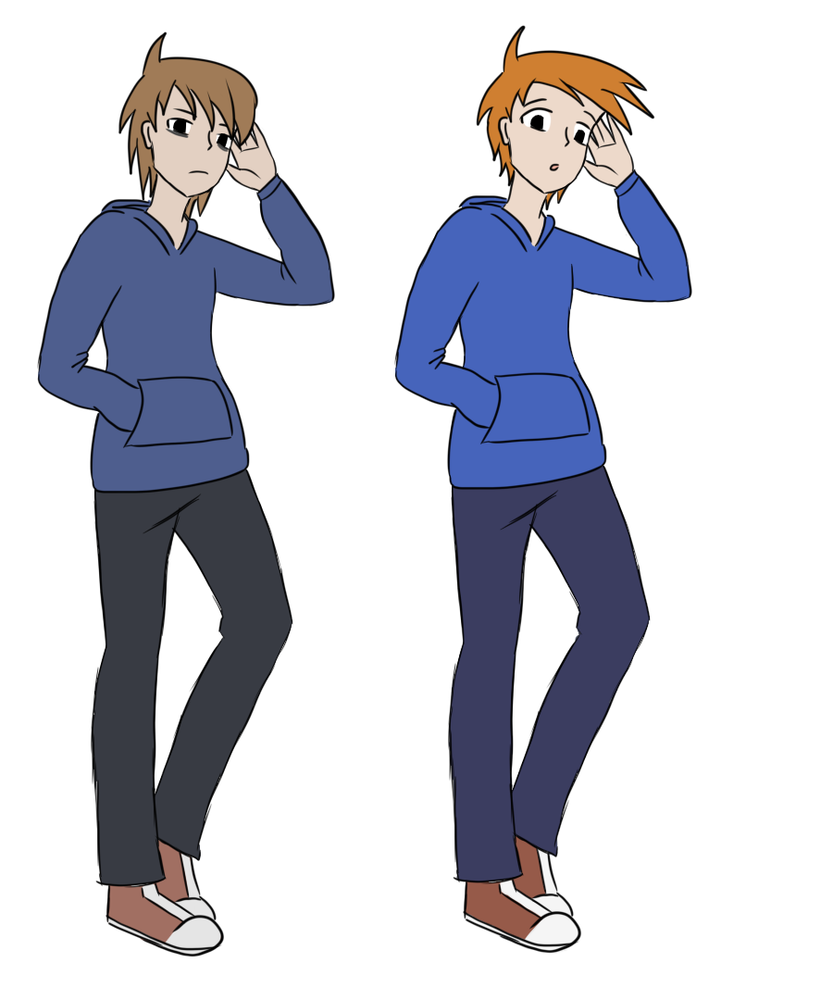

Virtual World es un videoclip de 3 minutos en animacion 2D tradicional el cual comenzo el 2022.
Este es un proyecto hecho completamente por mi, tanto historia, animacion y musica. Busca llegar a los jovenes de entre 19 y 25 años,
con una tematica de realidad virtual, fantasia y una pisca de romance.
La historia sigue a un pequeño Slime que aparece en un mundo virtual, donde comienza a recorrer el lugar buscando otra forma de vida, encontrando así a Kali,
un humano que se interesa en Slime. A medida que van pasando los días, Slime va interactuando con distintas criaturas mientras Kali lo estudia,
pero Slime se da cuenta de que Kali no estaba feliz y que buscaba a alguien como él. Es entonces que Slime se transforma en una chica para complacerlo,
pero esto hace que todo el mundo colapse, ya que Slime era, en realidad, un virus que acababa de evolucionar. Aun así, Kali intenta salvarla sin éxito,
resultando en la perdida de Slime y del mundo virtual.
El storyboard y animatic que se fue trabajando, estuvo en constante cambio para poder plasmar lo más importante para mi,
que era la desesperación de Kali en el final y la motivación para salvar a Slime, cosa que en unos inicios no era muy claro.
Respecto a Slime:
Es muy impulsiva y curiosa, de temperamento sanguíneo. Slime en su forma humana, aparenta una chica de 19 años, aunque éste no tiene un genero definido.
No sabe mucho de si misma, por lo que tampoco sabe que ella es un virus.
El primer ser vivo que conoce es Kali, así que le toma mucho cariño, tanto que buscará hacer todo lo posible para que él sea feliz.
Respecto a Kali:
Es un chico de 20 años inteligente y persistente, de temperamento melancólico y muy hábil con la programación.
Kali es un humano que regularmente entra a este mundo virtual a estudiar las diversas criaturas que aparecen.
En el mundo real, tiene un aspecto más deprimente.

Dentro del trabajo de fondos, hubo una gran inspiracion en el entorno de No Man Sky y El Lorax,
usando colores vivos y vegetacion distinta a la normal, la que despues tenia que contrastar con un escenario más cerrado que seria la habitacion de Kali,
tanto la real como la virtual.
Algunos de los fondos finales:
La musica que deseaba usar de fondo es la 8-bits, ya que esta podría dar más ambientación al mundo virtual que intento crear.
Aprendi lo basico en LMMS para poder crear mi propia música, la cual sigue en proceso.
El proyecto final se encuentra en proceso, por lo que aqui veran solo algunos planos ya animados y postproducidos.